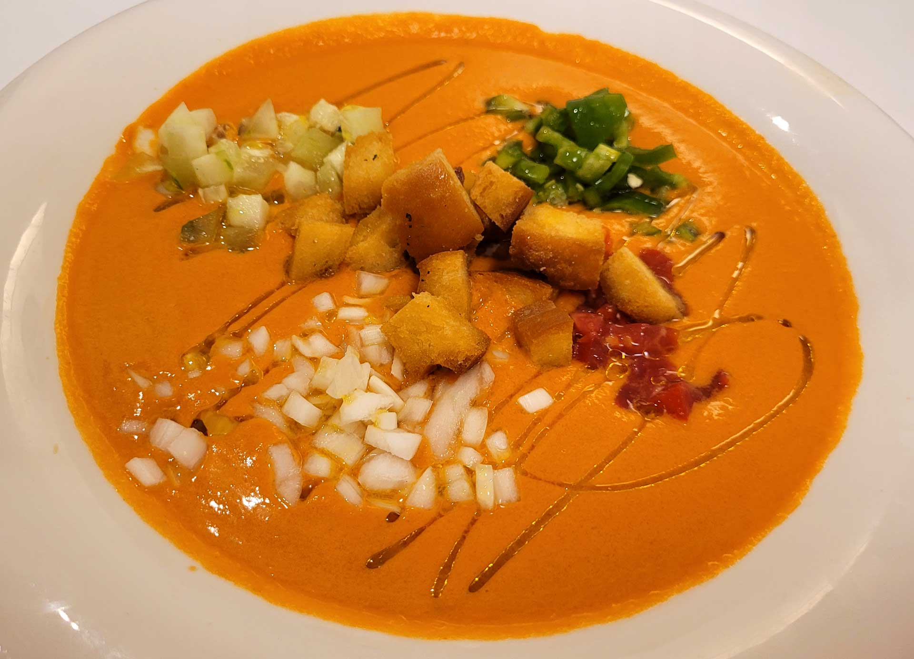

Gazpacho Andaluz Tradicional

El gazpacho es una sopa fría muy fácil de hacer y perfecta para el verano.
Ingredientes
- 1 kg de tomates maduros
- 1 pimiento verde
- 1 pepino
- 1/2 diente de ajo
- 50 ml de aceite de oliva
- 1 cucharada de vinagre
- Una pizca de sal
Pasos
- Lava muy bien los tomates, el pimiento y el pepino.
- Corta todos los ingredientes en trozos grandes.
- Pon todo en la batidora junto con el aceite, el vinagre y la sal.
- Tritura hasta obtener una mezcla suave.
- Sirve muy frío en la nevera.
Descargar receta en PDF